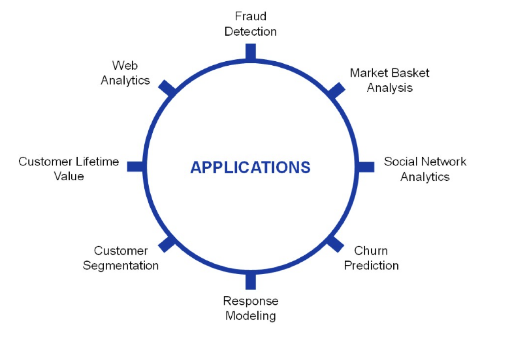
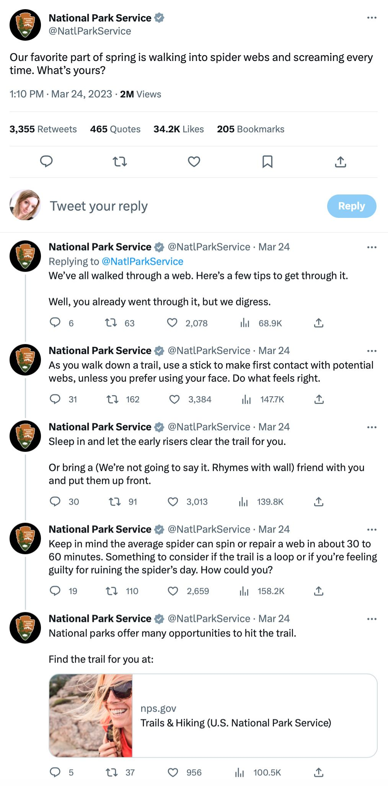
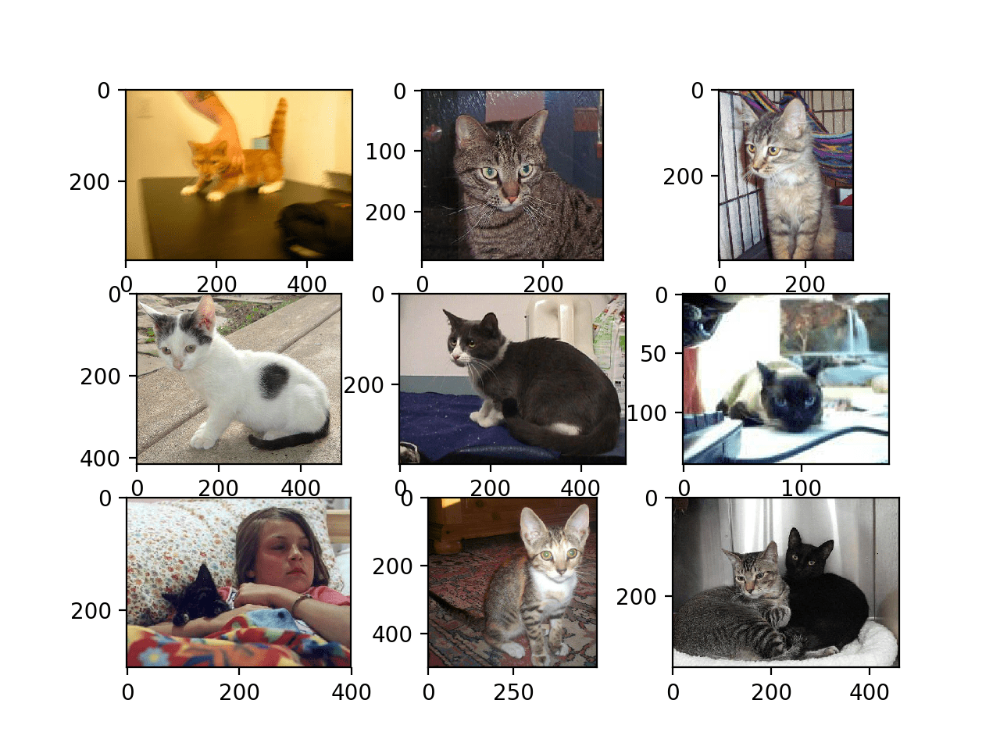
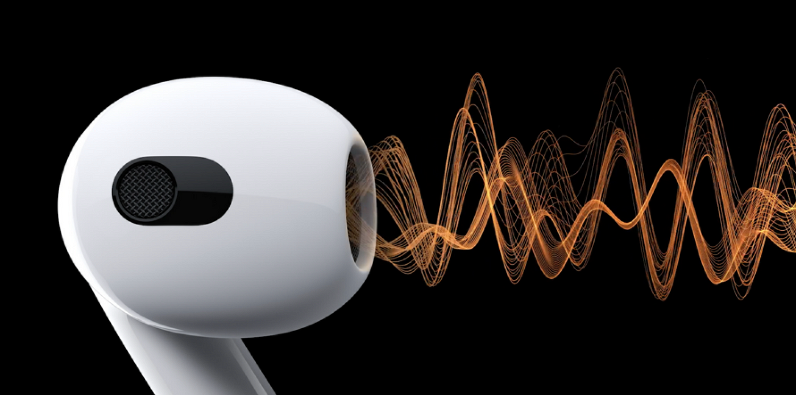
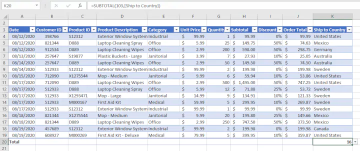
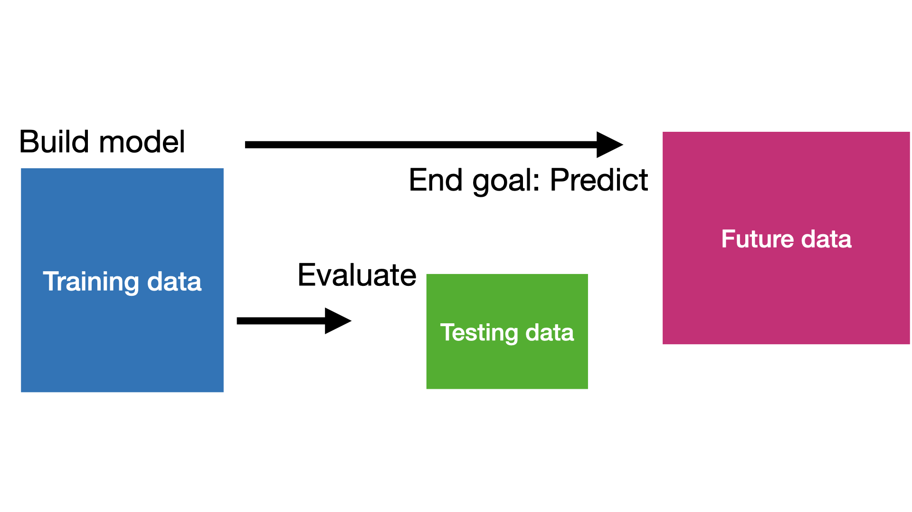

Introduction to Data Science
IN5148: Statistics and Data Science with Applications in Engineering
Agenda
- Introduction to data science
- Basic notation and terminology
Introduction to data science
Data science is …
a multidisciplinary field that uses scientific methods, processes, algorithms and systems to extract knowledge and insights from vast amounts of structured and unstructured data.
. . .


In 2004 …
Hurricane Frances was sweeping through the Caribbean and threatening to make a direct hit on Florida’s Atlantic coast.
. . .


. . .
Residents headed for higher ground, but in Arkansas, Wal-Mart executives saw a big opportunity for one of their newest data-driven weapons: predictive technology.
A week before the storm made landfall, Linda M. Dillman, Wal-Mart’s chief information officer, pressed her staff to create forecasts based on what had happened when Hurricane Charley hit several weeks earlier.
Backed by trillions of bytes of shopper history stored in Wal-Mart’s data warehouse, she said, the company could “start predicting what’s going to happen, rather than waiting for it to happen,” as she put it.
The result
The New York Times reported
“… Experts analyzed the data and found that stores would indeed need certain products, and not just the usual flashlights.”
Dillman said
“We didn’t know in the past that strawberry Pop-Tarts increase their sales, like seven times their normal sales rate, before a hurricane.”
The scheme of data science

Business understanding
Business understanding refers to defining the business problem to be solved.
The goal is to reframe the business problem as a data science problem.
Often, reframing the problem and designing a solution is an iterative process.
Common data science problems
Regression attempts to estimate or predict, for each individual, the numerical value of some variable for that individual. For example, “How much will a given customer use the service?”
. . .
Classification (or class probability estimation) attempts to predict, for each individual in a population, which of a (small) set of classes this individual belongs to. For example, “Among all customers of T-Mobile, which are likely to respond to a given offer?”
Other problems
Clustering attempts to group individuals in a population together by their similarity, but not driven by any specific purpose. For example, “Do our customers form natural groups or segments?”
Discussion
Often, recasting the problem and designing a solution is an iterative process.
The initial formulation may not be complete or optimal, so multiple iterations may be necessary for an acceptable solution formulation.
They key to a great success is a creative problem formulation by some analyst regarding how to cast the business problem as one or more data science problems.
Data understanding I
If the goal is to solve a business problem, the data that makes up the raw material available from which the solution will be built.
The available data rarely matches the problem.
For example, historical data is often collected for purposes unrelated to the current business problem or for no explicit purpose at all.
Data understanding II
- The costs of data vary. Some data will be available for free while others will require effort to obtain.
A critical part of the data understanding phase is estimating the costs and benefits of each data source and deciding wether further investment is merited.
Even after all datasets are acquired, collating them may require additional effort.
Our goal
Our goal is to turn data into information that answers useful questions.
Data classes
Text

Images

Video

Audio

Numerical data
Data science methodology is based on numerical data given in tables.

In fact, texts, images, videos or audios are transformed into this format to process them.
. . .
In this course, we will assume that the data is in a table.
Basic notation and terminology
Notation and terminology
Explanatory variables or predictors:
- \(X\) represents an explanatory variable or predictor.
- \(\boldsymbol{X} = (X_1, X_2, \ldots, X_p)\) represents a whole collection of \(p\) predictors.
Outcome or response:
- \(Y\) represents the response variable, which we’ll try to predict.
Two main problems
Regression problems. The response \(Y\) is quantitative. For example, a person’s income, the value of a house, the blood pressure of a patient.
Classification problems. The response \(Y\) is qualitative and has \(K\) different categories. For example, the brand of a product purchased (A, B, C), or whether a person defaults on a debt (yes or no).
The predictors (\(\boldsymbol{X}\)) can be qualitative or quantitative.
Example
What variables predict the presence of Type II diabetes on a person?
\(Y\) is a 1 if a person has Type II diabetes, a 0 if not.
The predictors (\(\boldsymbol{X}\)) might include: income, zip code, age, weight, height, gender and race.
A statistical model
A statistical model is a mathematical equation that embodies statistical assumptions concerning the generation of data.
Technically, it has the following form:
\[Y = f(\boldsymbol{X}) + \epsilon \]
where \(Y\) is a quantitative response, \(f(\boldsymbol{X})\) is the function that relates the predictors, \(\boldsymbol{X}\), to the \(Y\), and \(\epsilon\) is the (random) error term.
True and estimated models
\(f(\boldsymbol{X})\) represents the TRUTH. The true relationship between \(\boldsymbol{X}\) and \(Y\).
- Unknown
- Very complex
. . .
\(\hat{f}(\boldsymbol{X})\) represents an approximation or estimate of the true model constructed using data.
- Ideally, interpretable (but not necessarily)
Two datasets
“Training” data are data used to construct \(\hat{f}(\boldsymbol{X})\).
“Testing” data are data that were NOT used in the fitting process, but are used to test how well your model performs on unseen data.

Yogi Berra
It’s though to make predictions, especially about the future.